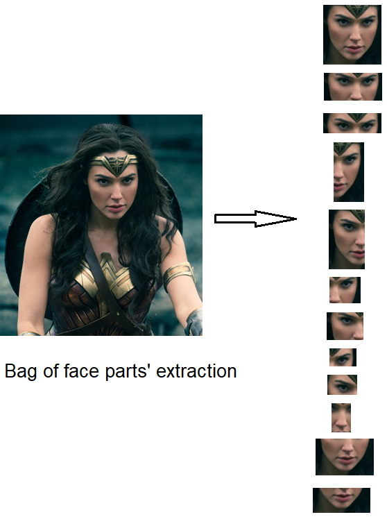

M. Sc. In Computer Science at California Polytechnic, Pomona (09/2017 - Present)
B. Sc. in Mathematics and Computer Sience at U. Of California, San Diego (09/2013 - 03/2016)
Computer Vision, Machine Learning
nghi@naduongonvision.net
A study about Bio-Inspired Visual System, which is based on an extended visual model that consists saccadic eye movement and visual pathway (vertebrate retina, lateral geniculate nucleus and visual cortex). This model applies variants of principal component analysis, to extract unique features from input data.
[Paper]
Applying this work to study about bio features of faces, using in facial recognition.
Reconstruction a 3D face model from single 2D image. Current state of my work is fitting 3D Morphable model to 2D image using hard edge correspondence and landmark correspondence, and least square optimization with constraints.
[Code]
Next steps are to estimate and render texture (two possible approaches are using Gauss-Newton iterative method or using CNN model), enhance low resolution/blurry images so that they could work with 3D model, and learn expression model.
This is Keras and TensorFlow project to compose a content image and a style image via a convolutional neural network (CNN) model. The implementation is followed the Keras tutorial on the VGG16 model. Also, the VGG19, InceptionV3 and Xception models have also experimented on this mini project.
[Code]
This is a pre-processing tool to extract and align face in the wild. This pre-processing steps will include landmark detection, align eye level, crop face image, and scale to certain size.
Another feature is to extract a bag of crop parts of a single face into 12 different parts. Applying this work to repair data for facial recognition.